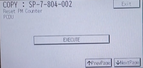

Ricoh SP 4510SF
Painel
Como configurar a rede da impressora:
Como imprimir o relatório de rede da impressora:
Como configurar o scanner:
Como entrar no modo técnico da impressora (SP mode):
Reset PCDU - Unidade do Cilindro ou Tambor
Ache na lista Reset PM Counter PCDU:

Manual do Usuário Ricoh SP 4510SF